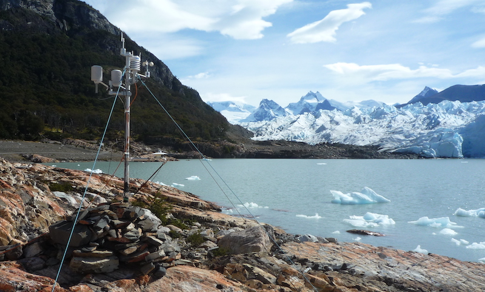

急速な氷損失が報告されるパタゴニアでどのくらい気候が変化しどのくらい氷河融解に影響を与えているのか，簡単に答えられそうな気もしますが，今だにその正確な答えは出ていません．その原因の一つは，長期間にわたる気象観測や氷河融解量が皆無であるとこが挙げられます．世界自然遺産としても有名なパタゴニア，ペリートモレノ氷河を舞台に，気象・氷河融解観測を長期間継続しています（下図）．
得られたデータから，近年の気候変動を読み取り，どのようなプロセスで氷が融けているのか，一つ一つのプロセスがどの様な時間変化をしているのかを調べています．
キーワード
パタゴニア，気候変動，氷河融解，ペリートモレノ氷河
研究成果
- M. Minowa, P. Skvarca and K. Fujita, Climate and surface mass balance at Glaciar Perito Moreno, Southern Patagonia, Journal of Climate, 36(2), 625–641, doi:10.1175/JCLI-D-22-0294.1